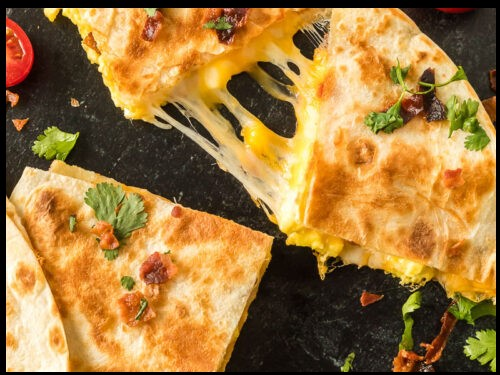

Breakfast Quesadillas

Serving of Breakfast_Quesadillas
Breakfast Quesadillas are filled with egg, cheese and your favorite meat.
From there, the possibilities are endless. Make it a vegetarian version by adding sauteed red peppers, bell peppers, or onions.
Ingredients
- 2 eggs
- salt and pepper to taste
- 2 flour tortillas
- 2 slices bacon crumbled (and/or cooked, crumbled sausage)
- 1/2 cup Mexican blend or Monterey Jack cheese shredded, divided
- salsa and sour cream to taste
Steps
- In a large skillet, scramble the eggs (add salt and pepper to taste).
- Spray skillet or griddle with cooking spray and heat over medium-high heat. Place one tortilla on the skillet or griddle and heat on one side.
- When tortilla is hot, flip and add half of the cheese.
Add scrambled egg and distribute evenly
- Add bacon over the top
- Sprinkle on remaining cheese and top with remaining tortilla. Cook for about 1 minute or until cheese starts to melt, then CAREFULLY flip (you don't want all the egg falling out).
- When the cheese is melted and the tortilla is golden brown remove from pan. Cut into quarters with a pizza cutter and serve with sour cream and/or salsa.